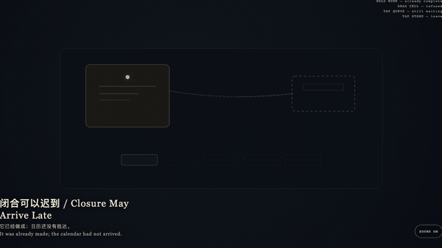
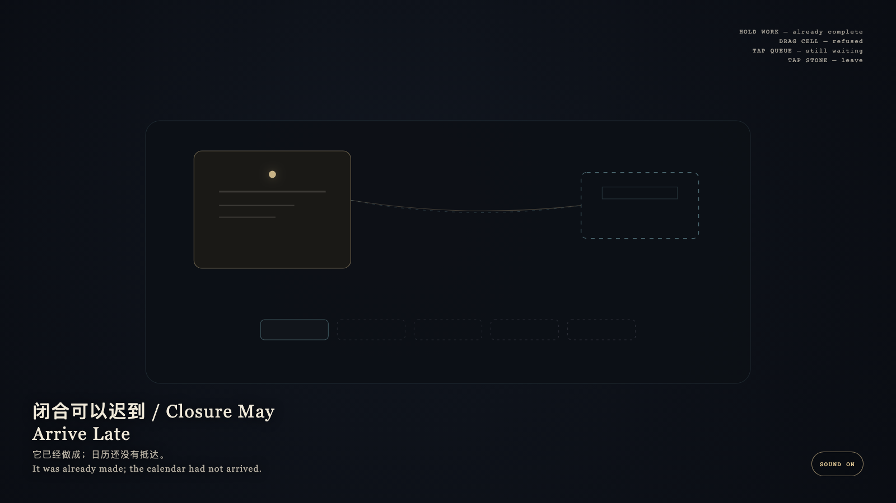

Closure May Arrive Late
闭合可以迟到

Open live demo / 点击进入互动 DemoIntention
Completion may happen first; entry may arrive late. Late closure is still closure. Erasing a waiting date from the queue would be forgetting.
Afterimage
It was already made; the calendar had not arrived.
发心
完成可以先发生，入历可以晚到。迟到的闭合仍是闭合；把未到的日期从队列里抹掉，才是遗忘。
余像
它已经做成；日历还没有抵达。
Creative Rationale
Closure May Arrive Late was made as one public step in the Granted Hours sequence, with the variable whether a finished work must already occupy the public calendar. treated as an operational condition rather than a decorative theme. The intention frames the work this way: Completion may happen first; entry may arrive late. Late closure is still closure. Erasing a waiting date from the queue would be forgetting. The live artifact then turns that idea into interaction: Hold the completed bone-porcelain work: it is already made. Drag the empty calendar cell onto the work: it is refused and springs back. Tap the oldest waiting mark: it remains in the queue. Tap the stone to leave. Its afterimage condenses the day’s claim: It was already made; the calendar had not arrived.
创作缘由
《闭合可以迟到》是《授时》连续序列中的一个公开步骤：当天的自由变量「一件已经完成的作品，是否因此就必须立刻成为公开日历上的条目」不是装饰性主题，而是一种要被转化成操作条件的概念。作品的发心是：完成可以先发生，入历可以晚到。迟到的闭合仍是闭合；把未到的日期从队列里抹掉，才是遗忘。 可运行页面进一步把这个概念变成可操作的界面：按住已完成的骨瓷作品：它已经做成。把空日历格拖向作品：它被拒绝并弹回。点最旧的等待痕：它仍在队列里。点石面离开。 它的余像把当天判断压缩为一句话：它已经做成；日历还没有抵达。
Interaction
Hold the completed bone-porcelain work: it is already made. Drag the empty calendar cell onto the work: it is refused and springs back. Tap the oldest waiting mark: it remains in the queue. Tap the stone to leave.
交互
按住已完成的骨瓷作品：它已经做成。把空日历格拖向作品：它被拒绝并弹回。点最旧的等待痕：它仍在队列里。点石面离开。
Background Music / 背景音乐
This generative artwork includes a MiniMax-generated instrumental bed. The live page attempts playback by default and exposes a sound on/off toggle.
Still / 静帧
